GUI desktop tiếng Việt cho coding agent oh-my-pi (omp). Mỗi tab phiên là một tiến trình agent riêng — bạn chuyển tab, việc vẫn chạy tiếp ở nền. Đủ sức của TUI, không còn giới hạn của terminal.
Sidecar đóng gói sẵn — không cần cài agent, Bun hay Node · Tất cả bản phát hành · Tự build từ mã nguồn
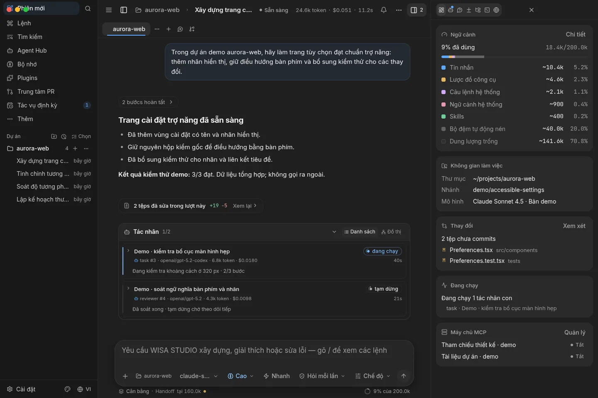
omp là coding agent mạnh, nhưng mạnh trong terminal thì khó đưa vào quy trình hằng ngày. WISA STUDIO bọc agent đó trong một ứng dụng desktop: nhiều phiên song song, tác vụ định kỳ, MCP và Skills đều có giao diện riêng — và toàn bộ giao diện nói tiếng Việt.
Agent được build thành sidecar nhị phân nằm trong ứng dụng. Không cần cài Node, Bun hay omp CLI riêng, cũng không cần cấu hình môi trường.
Giao diện có sẵn Tiếng Việt, English, 中文, Русский và ไทย. Thuật ngữ giữ nguyên chỗ cần kỹ thuật: phiên, mô hình, nhà cung cấp, tác vụ, không gian làm việc.
Sidecar là agent upstream oh-my-pi build nguyên bản từ commit ghi trong sidecar-source.json. WISA làm phần hiển thị và bản địa hóa.
Mỗi tab sở hữu một tiến trình agent đầy đủ. Giao một việc dài, chuyển sang tab khác và để nó tự chạy xong — thanh tiêu đề giữ nhịp báo sống nên bạn luôn biết cái gì đang chạy.
Một tab treo hay thoát bất ngờ không ảnh hưởng các tab còn lại.
Kéo một tab vào không gian làm việc để chạy hai phiên tách biệt cạnh nhau hoặc xếp trên dưới.
Tab đang mở, phiên đang dùng và điều hướng gần đây nhất vẫn còn sau khi khởi động lại hay nâng cấp ứng dụng.
Phiên đang chạy bị khóa, không ai chiếm nhầm được.
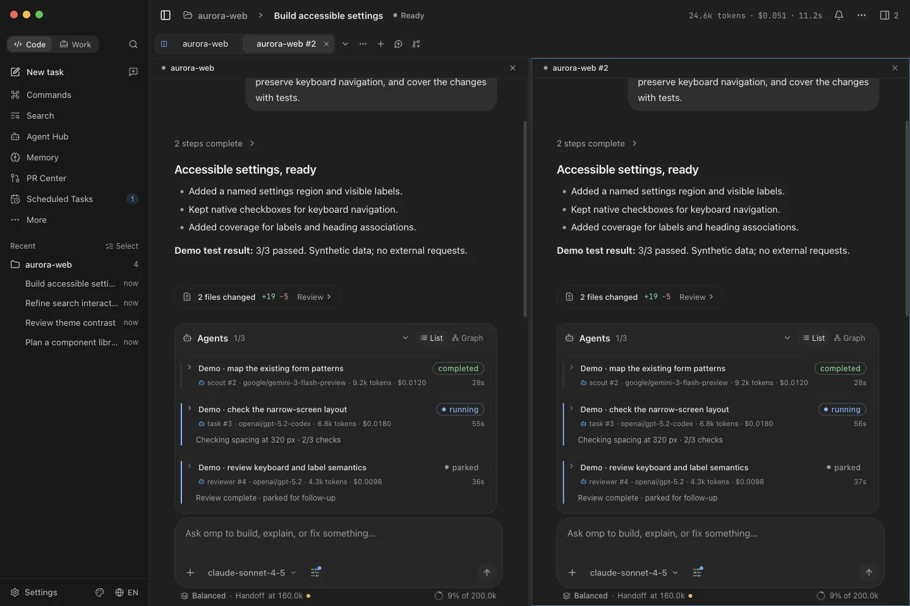
Todo, duyệt kế hoạch, tác nhân con và việc đang xếp hàng nằm giữa bản ghi hội thoại và ô soạn tin. Danh sách dài vẫn gọn, dòng gấp luôn hiện ra, và mở rộng thành chế độ xem toàn bộ mà không cần thanh cuộn lồng nhau.
Sửa tác vụ, duyệt kế hoạch, chấp thuận từng bước, và mọi thay đổi todo đều được lưu lại trong hội thoại.
Tóm tắt các thẻ Todo và Agent đang bận, rồi mở một thẻ để xem từng dòng trong khi ô soạn tin vẫn hiển thị.
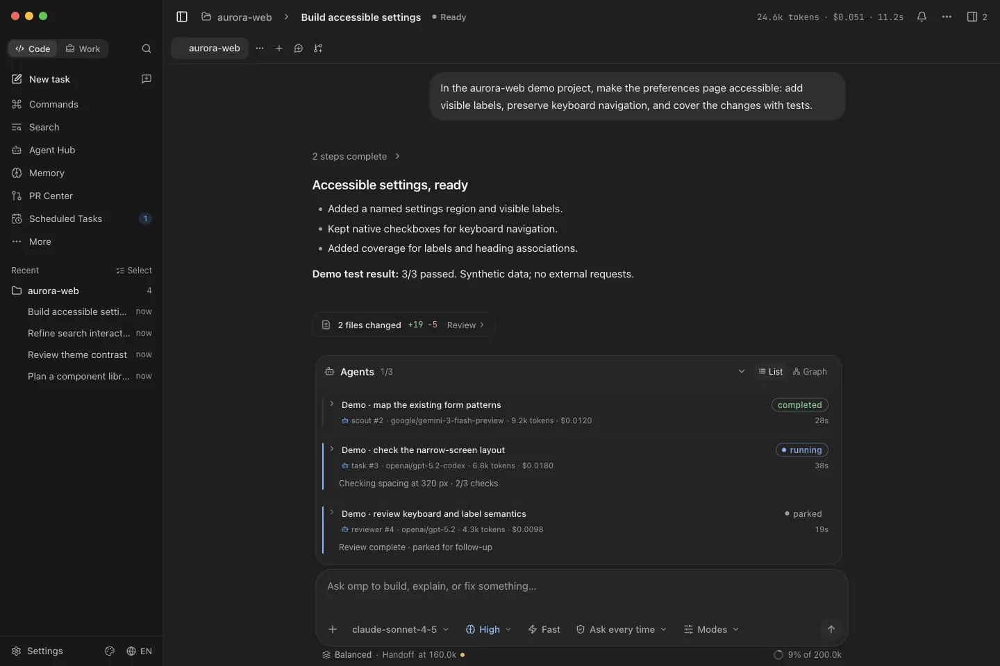
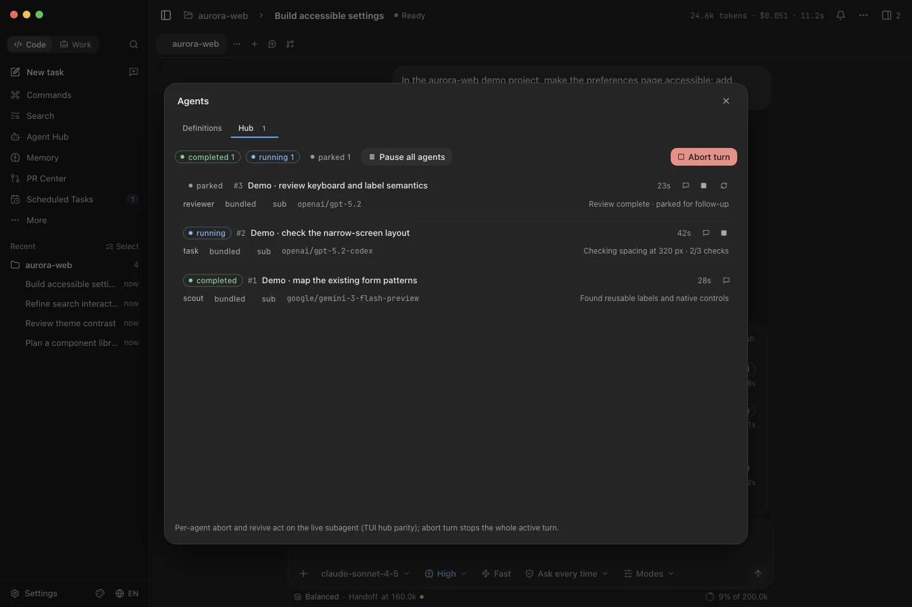
Bảo agent làm một việc theo lịch ("kiểm tra dashboard mỗi ngày làm việc lúc 9 giờ") — nó tạo tác vụ ngay, hoặc bạn tự tạo từ thanh bên. Mỗi lần chạy kết thúc bằng một báo cáo ngắn.
Chế độ chỉ đọc thì chỉ xem. Chế độ không gian làm việc sửa trong một Git worktree tách biệt, có thể chạy bước kiểm tra shell, và chờ trong hàng duyệt trước khi bất cứ thứ gì chạm vào nhánh của bạn.
Số lần chạy mỗi ngày, tỷ lệ thành công, chi phí theo tác vụ và các lần lỗi gần đây trong 7, 30 hoặc 90 ngày.
Tác vụ chỉ chạy khi WISA STUDIO đang mở. Khung giờ máy đã ngủ được ghi là bỏ lỡ, không bao giờ chạy lại.
Phần đầu trang liệt kê các lần chạy đã xong, kèm số lần bạn chưa mở. Đặt độ sâu cho tác vụ: một lượt, theo đuổi mục tiêu, hoặc nghiên cứu qua nhiều vòng.
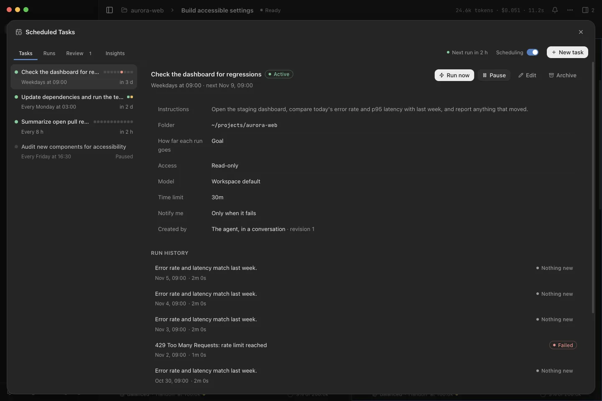
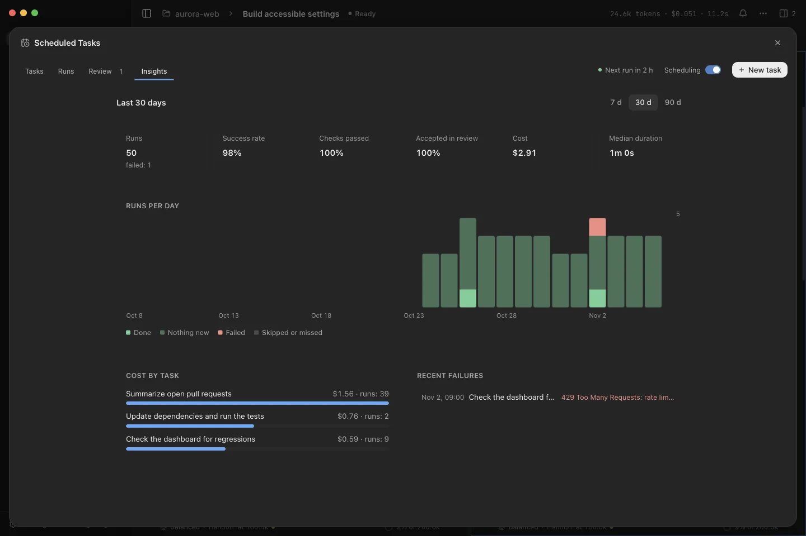
Tạo giao diện bằng cách chọn vài màu và xem trước ngay. Thêm nhà cung cấp bằng cách nhập URL và chọn từ danh sách mô hình nó trả về. Cả hai đều không bắt bạn sửa tệp cấu hình bằng tay.
WISA STUDIO có sẵn nhà cung cấp wisa trỏ tới https://api.askwisa.com/v1, tương thích OpenAI. Một khóa WISA dùng được cho mọi mô hình mà gateway phục vụ — danh sách mô hình tự tải về sau khi bạn lưu khóa. Các nhà cung cấp khác mà omp hỗ trợ vẫn dùng song song; khóa WISA là tùy chọn.
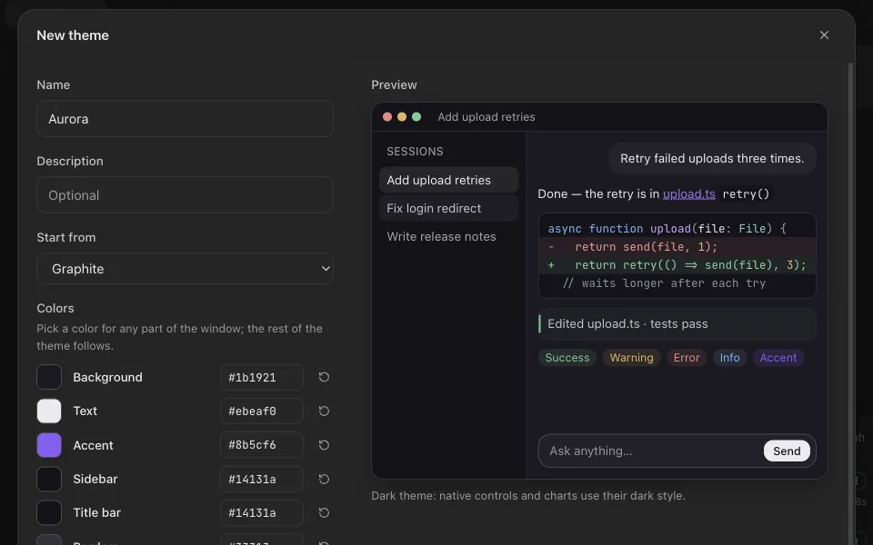
Chọn màu nền, màu chữ, màu nhấn và hơn thế, hoặc sinh các bề mặt hài hòa từ một màu nhấn. Mọi màu còn lại tự theo.
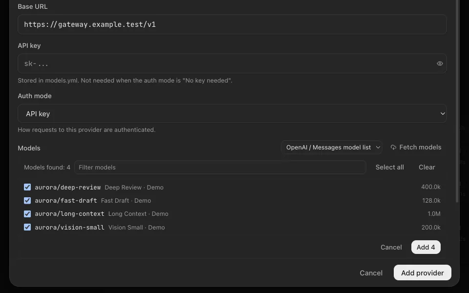
Lấy danh sách từ endpoint, chọn những mô hình bạn muốn, và sửa từng dòng trước khi lưu.
Cấu hình agent qua những bề mặt riêng, phản hồi nhanh. Lựa chọn và trạng thái mang màu nhấn; phần còn lại sạch, dễ đọc và co giãn theo cửa sổ.
Đọc đầy đủ hướng dẫn của skill, chỉnh phạm vi, thêm máy chủ, kiểm tra kết nối và cấp lại quyền mà không phải sửa tệp cấu hình bằng tay.
Kiểm tra kho mã hiện tại, xem phát hiện kèm bằng chứng, và quản lý các máy chủ từ xa dùng lại được trong cùng một khu vực vận hành.
Xem phiên bản GUI và omp cùng lúc, xử lý lỗi cập nhật rõ ràng, và cài gói đã xác minh kèm siêu dữ liệu công bố.
Giọng nói, cộng tác, gỡ lỗi và bảng lệnh đều có bề mặt gốc riêng — không phải terminal nhét vào webview.
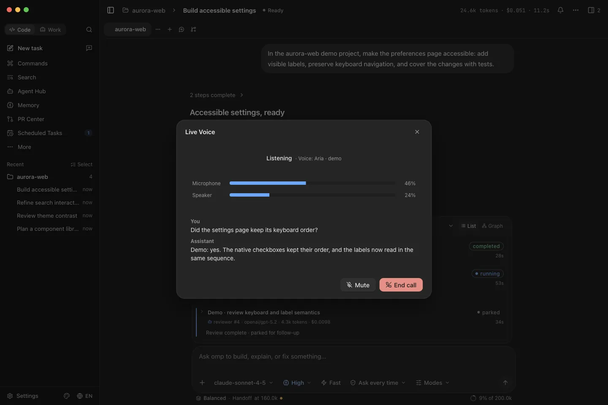
Phiên nói chuyện thời gian thực với bản ghi trực tiếp — trao đổi với agent trong khi tay vẫn ở trên bàn phím.
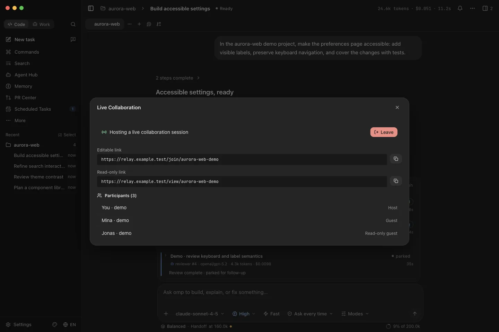
Mời đồng đội vào một phiên và cùng xem agent làm việc, trực tiếp.
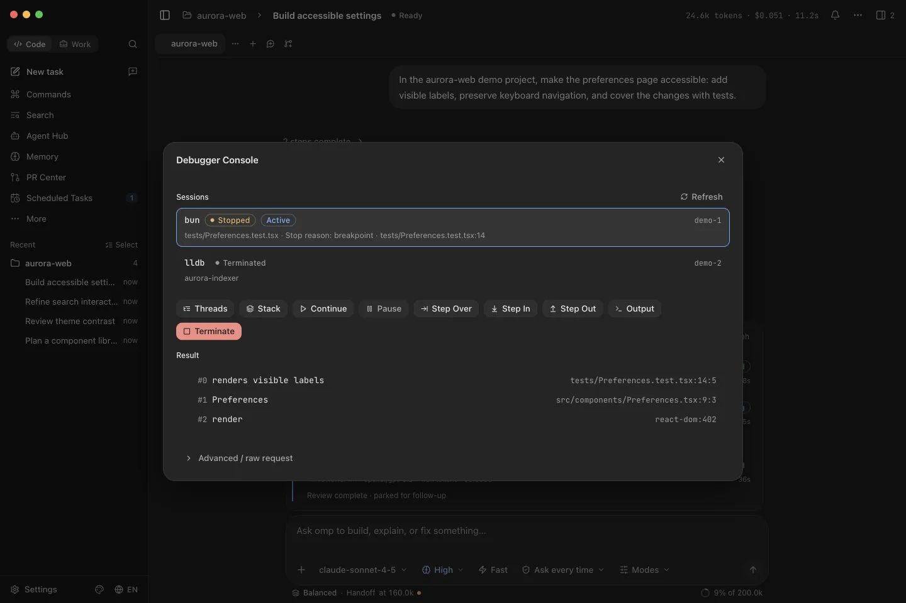
Xem các phiên gỡ lỗi của agent, kiểm tra luồng và khung ngăn xếp, rồi tiếp tục, bước tiếp hoặc dừng.
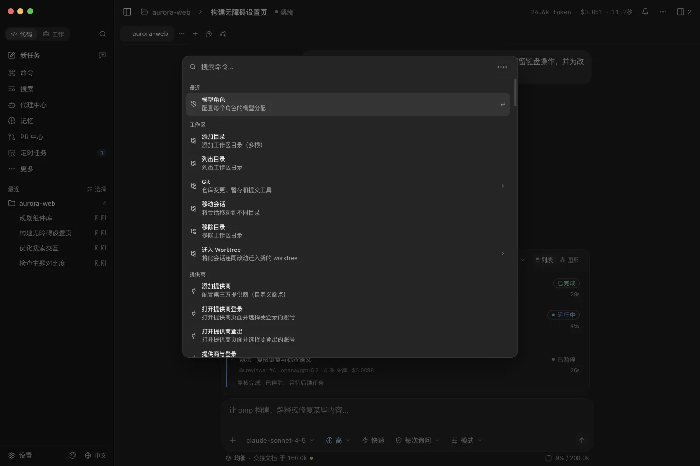
Mọi lệnh, hộp thoại và cài đặt cách bạn một tổ hợp phím — giao diện có sẵn Tiếng Việt, English, 中文, Русский và ไทย.
Mức dùng ngữ cảnh theo hạng mục — tin nhắn, lược đồ công cụ, câu lệnh hệ thống, skill và phần trống — kèm bảng chi tiết theo tệp và chi phí trực tiếp: những con số đứng sau mỗi phiên.
Số yêu cầu, token, chi phí và tỷ lệ trúng bộ đệm trong một cái nhìn.
Biết chính xác tệp và công cụ nào đang chiếm cửa sổ ngữ cảnh.
Ngữ cảnh theo hạng mục, không gian làm việc, tệp đã đổi, tác nhân con đang chạy và máy chủ MCP nằm cạnh hội thoại.
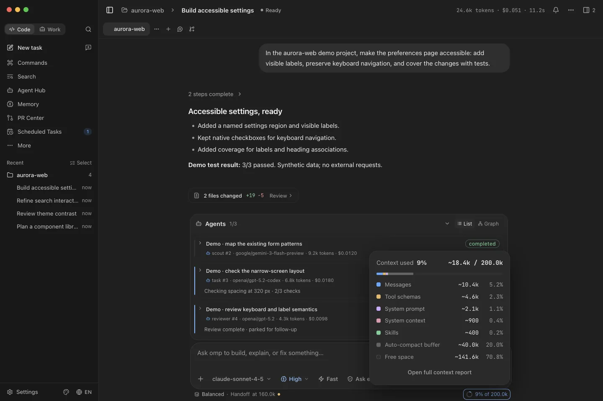
Ứng dụng kiểm tra GitHub và hiển thị tiến trình phát hành. Bản macOS chỉ ký ad-hoc và bản Windows chưa ký, nên lần mở đầu tiên có thể cần bạn xác nhận thủ công.
Bản phát hành mới trên GitHub hiện thành một banner nhỏ — không hộp thoại chặn, không ngắt việc.
Chọn bản Apple Silicon, Intel, Windows x64 hoặc Linux x64 từ GitHub Release mới nhất.
Cài gói tương ứng với nền tảng, rồi mở lại WISA STUDIO với nguyên phiên và cài đặt cũ.
Là GUI desktop cho oh-my-pi (omp) — trình coding agent chạy trong một cửa sổ thay vì terminal. Giao diện viết lại bằng tiếng Việt, chạy trên Electron cho macOS, Windows và Linux.
Không. Agent được đóng gói thành sidecar nhị phân ngay trong ứng dụng, nên bạn chỉ cần tải gói cài đặt và chạy.
Không. WISA STUDIO có sẵn nhà cung cấp wisa trỏ tới https://api.askwisa.com/v1, nhưng bạn vẫn dùng được mọi nhà cung cấp khác mà omp hỗ trợ. Khóa WISA là tùy chọn.
Mọi mô hình mà gateway WISA phục vụ, cộng với mô hình của các nhà cung cấp bạn tự thêm. Sau khi lưu khóa, danh sách mô hình được tải về tự động và bạn chọn trong ứng dụng.
Không. Đây là lớp hiển thị mới cho oh-my-pi: sidecar là agent upstream build nguyên bản từ commit ghi trong sidecar-source.json, phần WISA làm là GUI và bản địa hóa. Giấy phép MIT.
Có. Windows x64 có bản cài đặt và bản portable; Linux x64 có AppImage và gói .deb. macOS có bản arm64 cho Apple Silicon và bản x64 cho Intel.
Chọn bản dựng cho nền tảng của bạn. Agent, runtime và mọi thứ cần thiết đã nằm sẵn bên trong.
Còn có wisa-studio-0.9.48-portable.exe (Windows portable) và wisa-studio_0.9.48_<arch>.deb (Debian/Ubuntu) trong cùng bản phát hành. · Lấy API key WISA
# lấy mã GUI git clone https://github.com/smokeyduck/wisa-studio.git cd wisa-studio bun install bun run build:omp # build sidecar từ commit ghi trong sidecar-source.json bun run package:mac:arm64 # → dist/*.dmg